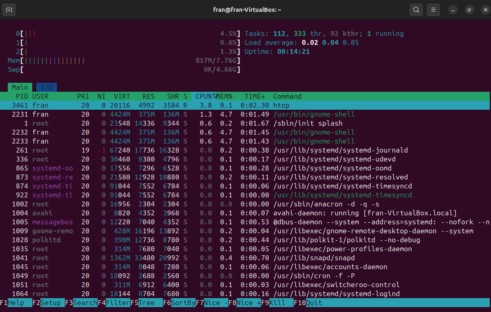
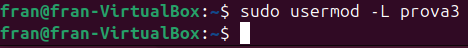
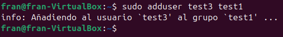
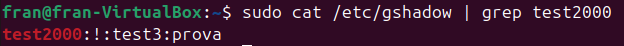
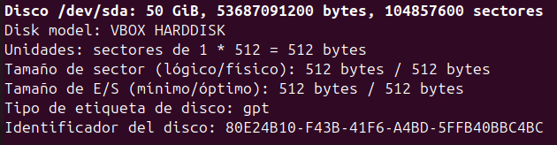

Sprint2
Gestor de prosesos
Identificació de processos
Per veure els prosesos que s'estan executant hi ha diferents formes. Es pot utilitzar:
sudo top
També podem utilitzar:
sudo htop

Es poden veure els prosesos a mode d'abre per poder veure el prosesos pares i els fills:
sudo pstree
Filtratge
Per a poder filtrat prosesos podeum utilitzar -p -h i ajustar la busqueda amb | greb:
· p s'utilitza per veure el PID(Proses ID) de cada proses:
· h subralla el proses que estem buscant.
Matar Prosesos
Per matar processos s'utilitza la següent comanda:
sudo kill (PID)
Si la comanda anterior no funciona podem utilitzar aquesta altra per forçar el tancament del proses:
sudo kill -9 (PID)
Treballs
Cuan estem executant un proses en terminal, si fel Ctrl + z el que fem es posarlo en segon plan, aixo s'anomena treball.
Amb aquesta comanda podem veure la llista de treball (prosesos en segon pla):
jobs
Amb aquesta comanda el que podem fer es reactivar un treball:
fg %[number]
Amb aquesta ultima comanda el que fem es matar el proses:
kill %[number]
Gestor d'usuaris
Usuaris
Un usuari és una entitat (persona, aplicació o procés) identificada dins del sistema operatiu que pot accedir-hi i utilitzar els seus recursos. Cada usuari té una identificació única que l'ajuda a diferenciar-se dels altres usuaris del sistema.
- Identificador d'usuari (UID): Un número únic assignat a cada usuari.
- Nom d'usuari: El nom amigable o alfanumèric amb el qual l'usuari s'identifica.
- Directori personal: Espai al disc reservat per a cada usuari per emmagatzemar els seus fitxers i configuracions.
- Permisos: Els drets que té l'usuari per accedir, modificar o executar fitxers i processos.
- Tipus d'usuaris:
- Usuari root:L'administrador del sistema amb tots els permisos.
- Usuaris comuns:Amb permisos limitats per evitar danys accidentals o maliciosos al sistema.
- Usuaris del sistema:Usuaris creats pel sistema operatiu per gestionar serveis i processos específics.
Grups
Un grup és una col·lecció d'usuaris que comparteixen certs permisos i privilegis. Els grups faciliten l'administració dels permisos, ja que permeten assignar permisos a un conjunt d'usuaris d'una sola vegada en lloc de fer-ho individualment.
- Identificador de grup (GID):Un número únic assignat a cada grup.
- Nom del grupUn nom alfanumèric per identificar el grup.
- Tipus de grups:
- Grup primari:Assignat a un usuari per defecte, i sovint coincideix amb el seu nom d'usuari.
- Grups secundaris:Altres grups als quals un usuari pot pertànyer.
Entorn Grafic
Per fer una grestio basica de manera grafica, podem instalar el seguent paquet:
apt install gnome-system-tools

Fitxer implicats
Els fitxer implicats son aquells fitxer que mostren la informacio publica de usuaris y grups.
Tots els fitxers estan dintre de la carpeta /etc.
passwd
cat /etc/passwd
En aques fitxer es guarda la informacio publica de cada un dels usualri, cada linia es un usuari i la informacio esta separada per ":".
La informacio que mostra es la següent:
usuari:contrasenya:UID:GID:gecos:directori_home:shell
-
Usuari
- Significat: És el nom d'usuari (username) que identifica l'usuari al sistema.
- Exemple: usuari
-
Contrasenya
- Significat: Conté una referència a la contrasenya xifrada de l'usuari.
- Exemple: x o *
- En sistemes moderns, aquest camp no conté directament la contrasenya (per seguretat). En lloc d'això:
- Si el valor és x, vol dir que la contrasenya xifrada es troba al fitxer /etc/shadow, que només pot ser llegit per l'administrador.
- Si el valor és *, indica que l'usuari no pot iniciar sessió (per exemple, comptes del sistema).
-
UID (User ID)
- Significat: És el número d'identificació únic de l'usuari al sistema.
- Exemple: 1000
- Detalls:
- 0: És el UID de l'usuari root, el superusuari.
- 1-99: Sovint reservat per a usuaris del sistema.
- 1000+: Generalment assignat a usuaris comuns.
-
GID (Group ID)
- Significat: És el número d'identificació del grup primari al qual pertany l'usuari.
- Exemple: 1000
- Detalls:
- Aquest GID correspon a un grup definit al fitxer /etc/group.
- Els permisos associats a aquest grup afectaran els fitxers o recursos propietat del grup.
-
Gecos
- Significat: Camp informatiu que pot contenir dades opcionals sobre l'usuari.
- Normalment no s'utilitza gaire.
-
Directori Home
- Significat: És el directori personal de l'usuari al sistema.
- Exemple: /home/usuari
- Detalls:
- Aquest és el directori on l'usuari emmagatzema els seus fitxers i configuracions personals.
- En iniciar sessió, l'usuari es troba automàticament en aquest directori.
-
Shell
- Significat: És el interpretador d'ordres (shell) que s'executa per l'usuari quan inicia sessió.
- Exemple: /bin/bash
- Detalls:
- Comú: /bin/bash (Bash shell) o /bin/zsh (Z shell).
- Si és /sbin/nologin o /bin/false, indica que l'usuari no pot iniciar sessió interactiva.
group
cat /etc/group
Es guarda tota la informacio que te que veure amb grups del sistema.
La informacio que mostra es la següent:
grup:contrasenya:GID:usuaris
-
Grup
- Significat: És el nom del grup que identifica el grup dins del sistema.
- Exemple: grup
- Aquest nom s'utilitza per referir-se al grup en operacions com la gestió de permisos.
-
Contrasenya
- Significat: Conté una referència a la contrasenya del grup (en desús en la majoria de sistemes).
- Exemple: x o buit (``)
- Detalls:
- Si el valor és x, vol dir que la informació relacionada amb la contrasenya es troba al fitxer /etc/gshadow.
- En la majoria de sistemes moderns, aquest camp és buit o no s’utilitza, perquè les contrasenyes de grup no són gaire comunes.
-
GID (Group ID)
- Significat: És el número d'identificació únic del grup.
- Exemple: 1000
- Detalls:
- Aquest identificador es fa servir per associar un grup amb permisos específics.
- Els GIDs baixs (com 0-99) sovint estan reservats per a grups del sistema.
-
Usuaris
- Significat: Llista dels usuaris que són membres del grup.
- Exemple: usuari1,usuari2,usuari3
- Detalls:
- Aquesta llista inclou els usuaris secundaris assignats al grup (separats per comes).
- Nota: L'usuari primari d'un grup no apareix necessàriament aquí, ja que està associat automàticament al grup pel camp GID del fitxer /etc/passwd.
shadow
cat /etc/shadow
Es guarda la informacio relasionada amb la seguretat de cada usuari, es mes segur que el passwd ja que en aquest nomes es pot accedir amb usuari root.
La informacio que mostra es la següent:
usuari:contrasenya:ultim_canvi:dies_minims:dies_maxims:dies_avis:dies_inactivitat:data_expiracio
-
Usuari
- Significat: El nom d'usuari (username) associat a aquesta entrada.
- Exemple: usuari
- Aquest camp identifica l'usuari al qual s'apliquen els valors de contrasenya i configuracions següents.
-
Contrasenya
- Significat: Conté la contrasenya xifrada de l'usuari.
- Exemple: $6$salhash$hashxifrat o ! o *
- Detalls:
- Si comença amb $ segueix un algorisme de xifrat (p. ex., $6$ per SHA-512).
- Si és ! o *, indica que l'usuari no pot iniciar sessió amb contrasenya.
- Aquest camp mai conté contrasenyes en text pla.
-
Últim canvi
- Significat: Data de l'últim canvi de contrasenya, expressada com el nombre de dies des de l'1 de gener de 1970 (època Unix).
- Exemple: 19312 (correspon al 3 de gener de 2023). *Permet al sistema saber quan l'usuari va canviar la contrasenya per última vegada.
-
Dies mínims
- Significat: Nombre mínim de dies que han de passar entre canvis de contrasenya.
- Exemple: 0
- Si és 0, l'usuari pot canviar la contrasenya en qualsevol moment. Això pot ser útil per evitar canvis massa freqüents.
-
Dies màxims
- Significat: Nombre màxim de dies que pot passar abans que la contrasenya caduqui.
- Exemple: 90
- Si és 90, l'usuari ha de canviar la contrasenya com a màxim cada 90 dies. Si no ho fa, la contrasenya caduca i es requerirà un canvi.
-
Dies d'avís
- Significat: Nombre de dies d'avís abans que caduqui la contrasenya.
- Exemple: 7
- Si és 7, l'usuari començarà a rebre avisos 7 dies abans que la contrasenya caduqui, perquè tingui temps de canviar-la.
-
Dies d'inactivitat
- Significat: Nombre de dies d'inactivitat després que la contrasenya ha caducat abans que el compte sigui desactivat.
- Exemple: 30
- Si és 30, el compte es desactivarà si passen 30 dies sense que l'usuari canviï la contrasenya després que aquesta hagi caducat.
-
Data d'expiració
- Significat: La data exacta en què el compte expira, expressada com el nombre de dies des de l'1 de gener de 1970.
- Exemple: 19500 (correspon al 1 d'agost de 2023).
- Si és buit o no especificat, el compte no caduca mai.
gshadow
cat /etc/gshadow
Es guarda la informacio de seguretat dels grups, es mes segur que el group ja que nomes es pot accedir a superusuari.
La informacio que mostra es la següent:
grup:contrasenya:administradors:usuaris
-
Grup
- Significat: El nom del grup.
- Exemple: grup
- Identifica el grup dins del sistema o aplicació.
-
Contrasenya
- Significat: La contrasenya del grup (opcional en alguns sistemes).
- Exemple: x, buit (``) o una contrasenya xifrada.
- Detalls:
- Si és x o buit, la informació de la contrasenya podria estar en un altre fitxer (p. ex., /etc/gshadow en sistemes Unix).
- Alguns sistemes permeten que un grup tingui una contrasenya per controlar l'accés als recursos associats al grup.
-
Administradors
- Significat: Llista dels administradors del grup.
- Exemple: admin1,admin2
- Detalls:
- Són usuaris amb privilegis especials dins del grup.
- Poden afegir o treure membres, assignar permisos, etc.
-
Usuaris
- Significat: Llista dels membres normals del grup.
- Exemple: usuari1,usuari2
- Detalls:
- Són els membres regulars del grup amb accés limitat segons els permisos assignats.
Afegir un usuari
Per a afegir un usuari hi han diverses formes de fer-ho. La primera es posant la seguent comanda, que et va giant pas per pas.
sudo adduser [usuari]
La comanda id serveix per veure que l'usuari sa creat amb el seu id juntamentamb el grup principal i el grup id.
Crear usuari des de 0
Hi ha una altra forma de crear usuaris, sense cap tipus de gia ni parametres. Aquesta forma es la següent:
Primer que tot creem l'usuari
sudo useradd [usuari]
Tot seguit establim una constrasenya.
sudo passwd [usuari]
Tot seguit establim el shell a l'usuari.
sudo usermod -s [shell] [usuari]
Per ultim hem de crear la carpeta home de l'usuari.
Per comprobar si funciona el que hem de fer es iniciar sesio amb l'usuari.
Modificar contrasenya
Per modificar la contrasenya hem d'utilitzar la següent comanda.
sudo passwd [usuari]
Modificar nom
Canviar el nom d'usuari es un poc complicat pero es fa de la següent manera.
sudo ausermod -l [nom d'usuari nou] [usuari]
Amb la comanda /etc/passwd es pot veure com a cambiat el nom d'usuari pero no la resta de parametres.
Borrar usuari
Per borrar un usuari podem utilitzar dos comandes.
La primera el que fa es borrar l'usuari pero no el directori i altres parametres.
sudo deluser [usuari]
La segona manera si que borra el directori i tots el parametres i configuracions que te aquell usuari.
sudo userdel -r [usuari]
Bloquejar usuaris
Per bloquejar un usuari hem d'escriure la següent comanda.
sudo usermod -L [usuari]

Comprobant
Desbloquejar usuaris
Per debloquejar l'usuari hem d'escriure la següent comanda.
sudo usermod -U [usuari]
Comprobant
Politica de caducitat
Per a establir o modificar politiques de caducitat hem d'utilitzar la seguent comanda.
sudo chage [opcions] [usuari]
Tambe podem cambiar les politiques de forma interactiva amb la següent comanda.
sudo chage [usuari]
Carpeta de configuració d'usuari
skel
En aquesta carpeta hi han tota la informacio que es copia dintre de la carpeta home de cada usuari nou creat. Esta situada en la ruta /etc/skel.
.profile
El fitxer .profile és un script d'inici de sessió que s'executa quan l'usuari inicia sessió en un shell interactiu de tipus login shell.

.bashrc
L'arxiu bashrc es un script que guarda la configuracio de cada terminal oberta de l'usuari
Gestor de grups
Crear grups
Podem crear grups amb la següent coamanda:
sudo addgroup [grup]
Afegir usuaris a un grup
Hi ha tres formes de afegir usuaris a un grup
gpasswd
sudo gpasswd -a [user] [grup]
adduser
sudo adduser [user] [grup]

usermod
sudo usermod -a -G [grup] [user]
Eliminar usuari d'un grup
deluser
Al moment d'tutilitzar aquesta comanda per eliminar un usuari d'un grup, s'ha de tenir cura ja que en cas de que no posesim el grup. L'usuari sera eliminat.
sudo deluser [usuari] [grup]
gpasswd
També podem utilitzar aquesta altra comanda.
sudo gpasswd -d [user] [grup]
Canviar el nom d'un grup
Per a poder camviar el nom d'un grup podem utilitzar la seguent comanda.
sudo groupmod -n [nom] [grup]
Asignar administrador a un grup
Amb la seguent comanda podem indicar un administrador per a un grup
sudo gpasswd -A [user] [grup]


Modificar el grup principal d'un usuari
sudo usermod -g [grup] [user]
Assignar contrasenya a un grup
sudo gpasswd [grup]
Esborrar contrasenya de un grup
sudo gpasswd -r [grup]
Gestor de permisos
En Linux, cada fitxer i directori disposa d’un conjunt de permisos que defineixen com es poden gestionar. Aquests permisos es divideixen en diverses categories: permisos estàndard, umask, permisos especials i ACLs.
A part dels permisos, cada fitxer o carpeta té un propietari associat, que correspon a un usuari i a un grup específics.
Paràmetre -R:
El paràmetre -R es pot utilitzar amb qualsevol de les comandes següents per fer que els canvis s’apliquin de forma recursiva. Això vol dir que els permisos es configuraran automàticament per a tots els elements continguts dins del directori seleccionat.
Per posar usuari i un grup con a propietari, podem utilitzar la següent comanda:
sudo chown [usuari]:[grup] [fitxer/directory]
Per canviar solament el grup, podem utilitzar aquesta altra comanda:
sudo chgrp [grup] [fitxer/directory]
Permisos Base
En Linux, els permisos es representen amb tres lletres:
r (read): Permet llegir el contingut d’un fitxer o veure el contingut d’un directori.
w (write): Permet modificar o esborrar un fitxer, i en el cas d’un directori, afegir o eliminar elements dins d’aquest.
x (execute): Permet executar un fitxer si és un programa o script, i en el cas d’un directori, accedir-hi i recórrer-ne el contingut.
Si un permís no està atorgat, apareix un guió (-) en lloc de la lletra corresponent. Per exemple:
rw- indica permisos de lectura i escriptura, però no d’execució.
r-- només permet la lectura.
--- significa que no es té cap permís.
També es poden gestionar els permisos mitjançant símbols. Aquesta és la forma de representar-los:
Tipus d’usuari al qual apliquen els permisos:
u: Usuari (propietari del fitxer o carpeta).
g: Grup (grup associat al fitxer o carpeta).
o: Altres (tots els altres usuaris).
Acció que es vol realitzar amb els permisos:
+: Afegir permisos.
-: Treure permisos.
=: Assignar exactament els permisos indicats.
Tipus de permís:
r: Lectura (read).
w: Escriptura (write).
x: Execució (execute).
Exemple:
u+r afegeix permís de lectura per a l’usuari.
g-w elimina el permís d’escriptura per al grup.
o=x assigna només permís d’execució per als altres usuaris.
sudo chmod [permisos] [fitxer/directory]
Exemple de permisos en Octal:
Exemple de permisos en Simbols:
Umask
Permisos inicials:
Quan es crea un fitxer o carpeta, els permisos inicials són:
Fitxers: 666 (lectura i escriptura per a tots, però sense execució).
Carpetes: 777 (lectura, escriptura i execució per a tots).
Això es fa per assegurar que, per defecte, els fitxers no siguin executables.
Càlcul amb el umask:
El umask restringeix aquests permisos inicials mitjançant una operació de resta en base octal.
Fórmula:
Permisos finals = Permisos inicials - Umask
Exemple:
Umask: 077
Permisos inicials: 777 (per a carpetes).
Càlcul: 777 - 077 = 700
Això significa que la carpeta creada tindrà els permisos 700 (només el propietari pot llegir, escriure i executar).
Per als fitxers:
Permisos inicials: 666
Càlcul: 666 - 077 = 600
Això implica que els fitxers creats tindran permisos 600 (només el propietari pot llegir i escriure).
Permisos especials
Els permisos especials en Linux són configuracions addicionals que es poden aplicar a fitxers i carpetes per adaptar-los a necessitats específiques del sistema.
Sticky
En un directori, permet que solament el propietari del arxiu, o root, pugui modificar-ho.
S'utilitza comunment en la comparticio de carpetes.
Per a aplicar-ho en un directori, s'utilitza la seguent comanda:
sudo chmod +t [directory]
SUID
Permet a un usuari tindre els permisos del usuari propietari durant la execucio del fitxer.
En el camp de permisos, es mostra amb una s en menys de una x a l'usuari propietari.
-rwsr-xr-x
Per a aplicar-ho en un arxiu, s'utilitza la seguent comanda:
sudo chmod u+s [fitxers]
SGID
Permet a un usuari executar els arxius com si fos membre del grup propietari d'aquests arxius, però només de manera temporal. Si l'arxiu o directori és creat dins d'un directori amb aquest permís, els nous arxius o directoris heretaran el grup del directori on s'han creat, en lloc de pertànyer al grup del creador.
En el camp de permisos, es mostra amb una s en menys de una x al grup propietat.
-rwxr-sr-x
Per a aplicar-ho en un arxiu o directori, s'utilitza la seguent comanda:
sudo chmod g+s [fitxer/directory]
ACLs
Les ACLs (Llistes de Control d'Accés) són una extensió dels permisos bàsics en Linux, que permeten assignar permisos específics a usuaris i grups, fins i tot si no són el propietari o grup del fitxer o directori. Això proporciona un control més detallat sobre qui pot accedir a quins recursos.
Informació de un arxiu / directory
Per a visualitzar els permisos incloent els ACLs, utilitzem la seguent comanda:
sudo getfacl [fitxer/directori]
Definir permisos
Per a definir permisos o podem fer de la seguent manera:
sudo setfacl -m [usuari/grup]:[nom usuari/grup]:[permisos] [fitxer/directory]
Eliminar permisos
Per eliminar permisos d'un usuari o grup en concret, utilitzem la seguent comanda:
sudo setfacl -x [usuari/grup]:[nom usuari/grup] [fitxer/directory]
Tambe es pot eliminar totes les ACLs establertes amb la seguent comanda:
sudo setfacl -b [fitxer/directory]
Sistemes de fitxers i particions
Estructura de la informació
Serctors
-
Unitat mínima física d'emmagatzematge en un disc.
-
Cada sector té una mida fixa de 512 bytes.
-
Si la informació és més gran que un sector, es divideix entre diversos sectors.
-
La mida del sector no es pot modificar.
Blocs
-
Unitat mínima lògica dins d'una partició de disc en el sistema operatiu.
-
Composats per diversos sectors físics.
-
Els blocs tenen una mida habitual de 4096 bytes, però es poden ajustar.
-
Si un bloc no s'omple completament, es deixa espai no utilitzat.
-
Cada arxiu té un "índex" que apunta als blocs on es guarda la informació.
Fragmentació interna
-
Succeeix quan l'espai dins d'un bloc no s'omple completament.
-
Deixa espai vacant dins dels blocs que no es pot utilitzar.
-
Pot ser un problema petit per a arxius petits, però pot afectar l'espai total en gran escala.
-
Es pot solucionar ajustant la mida dels blocs.
Fragmentació externa
-
Succeeix quan un arxiu està dispers entre diversos blocs.
-
Fa més difícil i lent l'accés a la informació.
-
Es resol formatejant el disc o utilitzant eines de desfragmentació.
-
A Windows hi ha eines nadiues, mentre que a Linux cal instal·lar-les.
Tipus de formateig
Apuntadors
-
Els arxius i carpetes es guarden en blocs.
-
El sistema operatiu utilitza un índex d'apuntadors per localitzar els blocs on es troba cada arxiu o carpeta.
-
Si un bloc no està indicat per un apuntador, es considera buit, tot i que podria no estar-ho realment.
Alt nivell
-
Solament es borren els apuntadors, però no es borren els arxius.
-
És un procés ràpid, ja que no es borra la informació real dels arxius.
-
Els arxius segueixen existint fins que s'escriu nova informació en aquests espais.
Normal
-
Esborra els apuntadors i marca els sectors defectuosos per evitar escriure-hi dades en el futur.
-
És més lent que el formateig d'alt nivell perquè marca els sectors defectuosos.
-
És més segur perquè assegura que no es guardi informació en sectors defectuosos.
Baix nivell
-
Borra els apuntadors, la informació dins de cada sector i intenta reparar els sectors defectuosos.
-
Actualment, no es fa a través del sistema operatiu, sinó amb programes especialitzats.
-
És el més lent perquè elimina tota la informació del disc de manera exhaustiva.
Sistema de fitxers
Teoria
Un sistema de fitxers és una manera d'organitzar i gestionar l'emmagatzematge de dades en un dispositiu de memòria, com un disc dur o SSD. Els sistemes de fitxers determinen com es descomponen, es guardaran i es recuperaran els fitxers i directoris.
EXT4
-
Sistema de fitxers de Linux: És el sistema de fitxers més utilitzat en distribucions Linux.
-
Suporta fitxers de fins a 16 TB: Pot emmagatzemar arxius molt grans.
-
Eficient amb arxius petits: Optimitza l'espai per a arxius petits.
-
Registre de transaccions: Inclou un registre que ajuda a recuperar les dades en cas de talls sobtats d'alimentació, millorant la seguretat de les dades.
NTFS
-
Sistema de fitxers de Windows: És el sistema de fitxers predeterminat per a versions modernes de Windows.
-
Suporta fitxers de fins a 16 TB: També pot gestionar fitxers molt grans.
-
Xifrat i compressió: Inclou funcionalitats de seguretat, com el xifrat de fitxers i carpetes, i la compressió per estalviar espai.
-
Compatible amb Linux: Tot i que NTFS es pot utilitzar en Linux, pot causar certs problemes o incompatibilitats amb alguns sistemes o operacions.
Particions
Llistar particions
Per llistar els discs del sistema, utilitzem la seguent comanda:
sudo fdisk -l

-
Disk model: És el model del disc detectat pel sistema operatiu.
-
Unidades: Defineix com es mesura la capacitat del disc, en aquest cas en sectors.
-
Tamaño de sector: Indica que tant la mida lògica com la física dels sectors és de 512 bytes.
-
Tamañode E/S: Descriu la mida mínima i òptima de transferència de dades per a operacions d'entrada/sortida (E/S).
-
Tipo de estiqueta de disco: Indica que el disc utilitza l'esquema de particionat GPT
-
Identificador del disco: És un identificador únic per a aquest disc, generat per l'esquema GPT.
Partticionar disc
Copies de seguretat
Conceptes teorics
completes
-
Es fa un copia completa.
-
Es pesat.
-
Tarda molt.
-
Al refertir fins la copia de seguretat, es facil.
-
Nomes es necessita la ultima copia.
Diferencials
-
Es fa una copia completa cada cert temps, despres es fa una copia solament guardant els canvis fins la ultima copia completa.
-
No es tant pesat com les completes
-
Tarda molt al tindre que cargar la completa i la diferencial
-
Es necessita la ultima copia completa i diferencial per a poder revertir.
Incrementals
-
Es fa una copia completa cada cert temps, despres es fa una copia solament guardant els canvis de la ultima copia, sent la ultima una altra incremental o completa.
-
No es tant pesat com les completes
-
Es necessita la ultima copia completa i cadascuna de les copies incrementals que s'han fet despres.
Programes amb interficie grafica
Deja Dup
Es pot intal·lar per l'app center de Ubuntu
Nomes obrir el programa em diu de crear una copia de seguretat
Tot segit me diu quina carpeta bull guardar i quineds esepsions hi han
Indiquem on bolem que es guardi
Li posem una password
I ja estaria